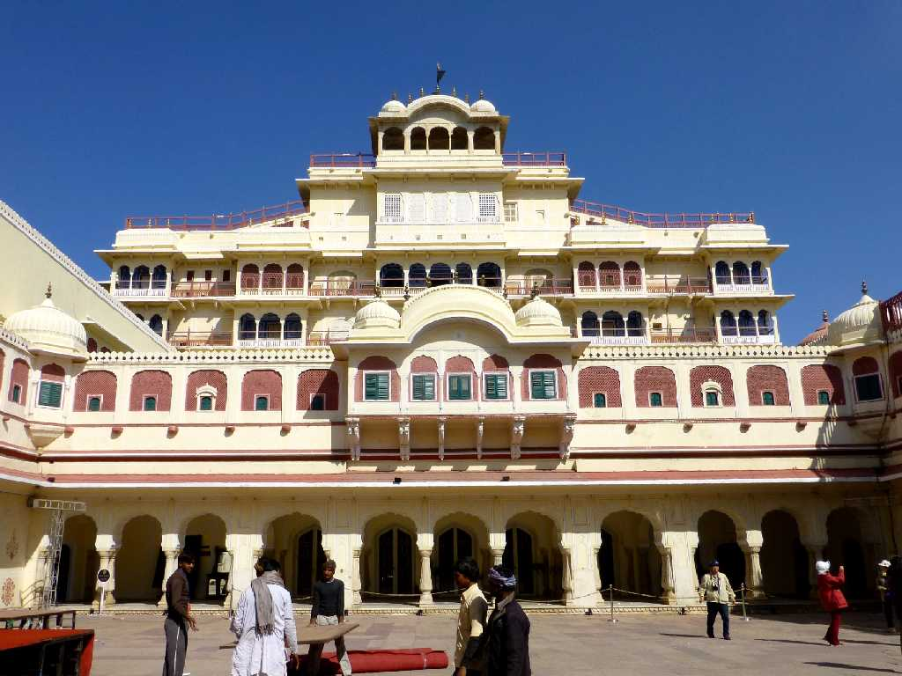
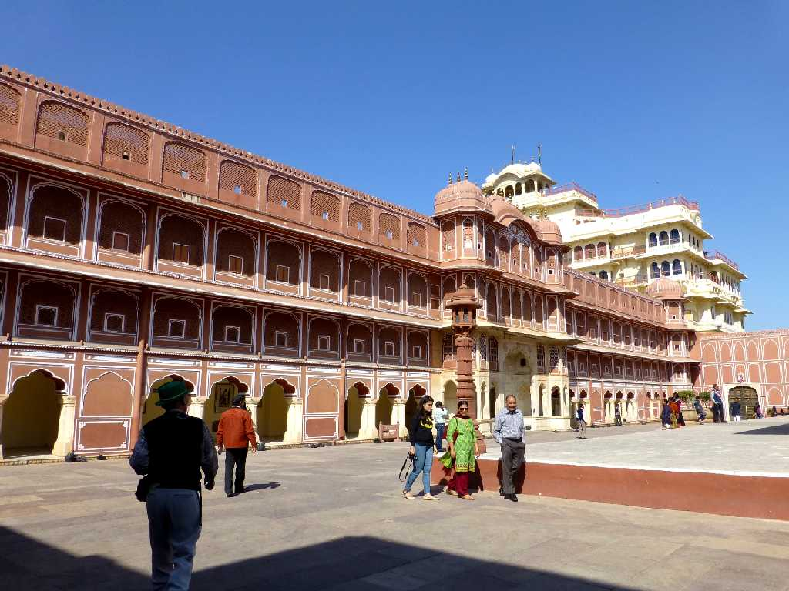
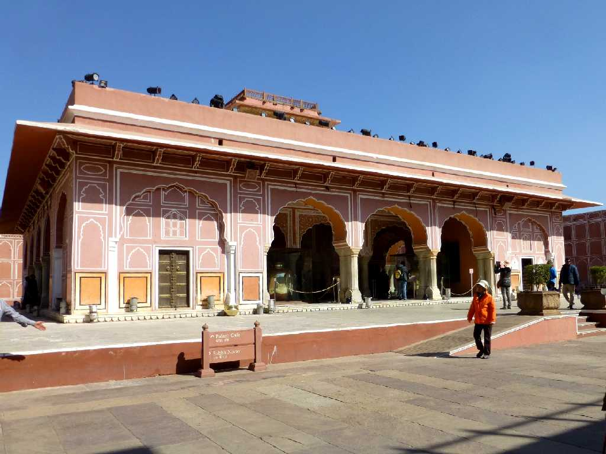
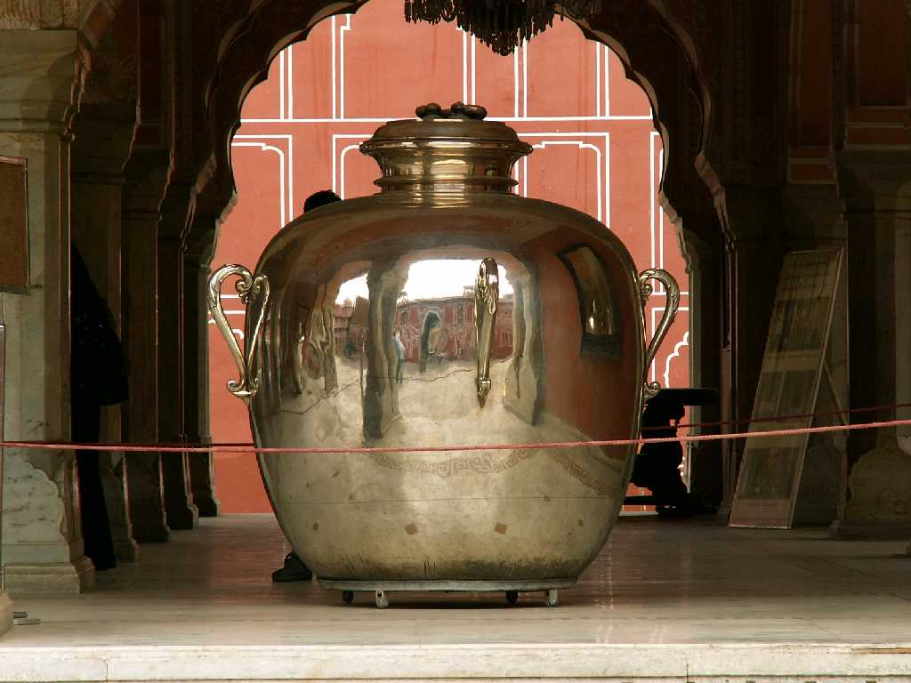
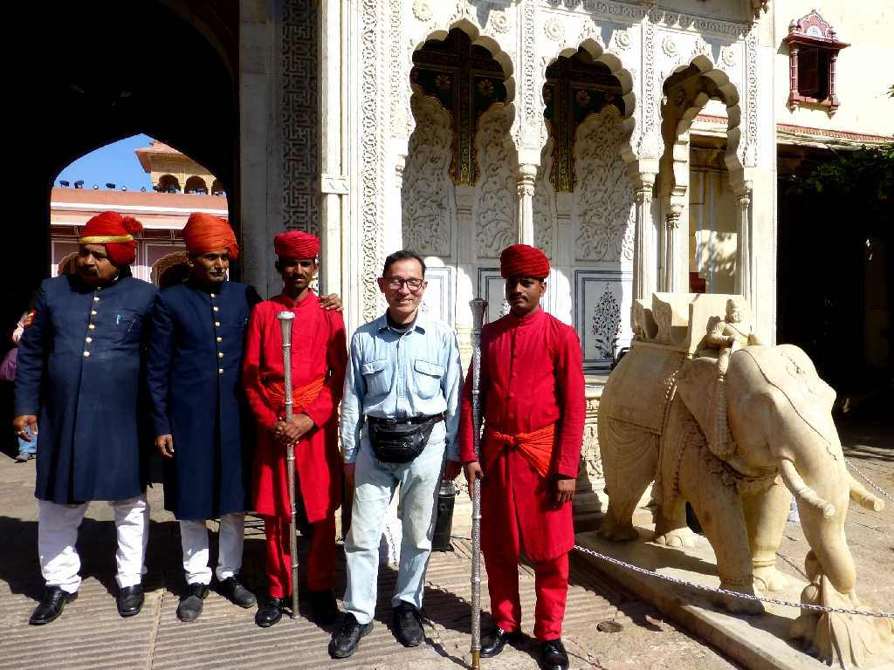
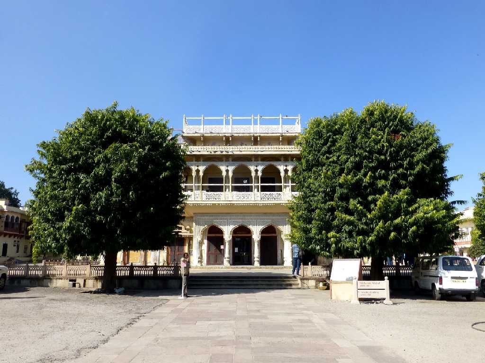

Chandra Mahal City Palace Jaipur
１７２６年にアンベール王国のマハラジャが人口増加等に伴いアンベール城からジャイプールに遷都して拠点とした宮殿

Chandra Mahal City Palace
赤砂岩を豊富に利用して創られた宮殿からジャイプールの街が発展し赤砂岩の建築物が多くピンクシティーと呼ばれるようになった

Diwan-I-Khas City Palace

Silver Ganges Water Urns Diwan-I-Khas
世界最大の銀製品 ガンジス河の水を入れるために創った重さ３４５ｋｇ４０９１ℓの銀の壷

January 28 2015 Gate City Palace

Mubarak Mahal City Palace